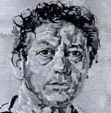
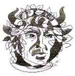
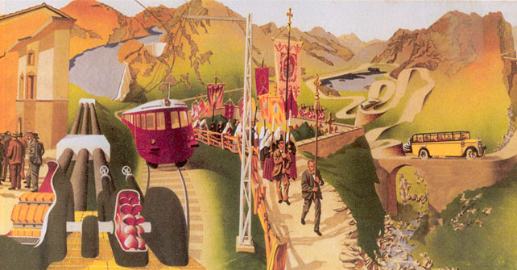
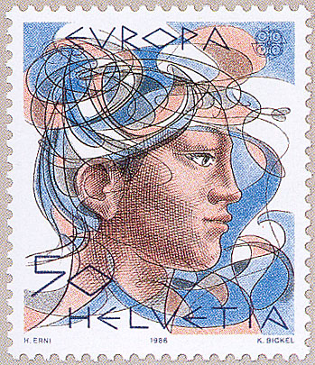
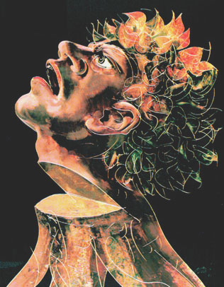
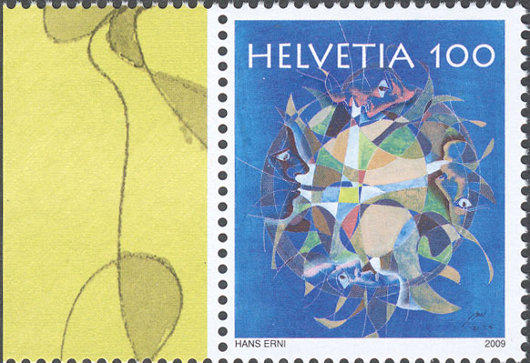
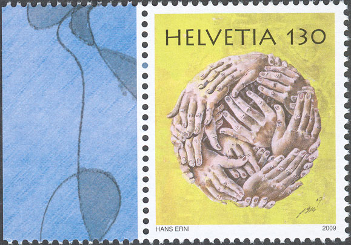
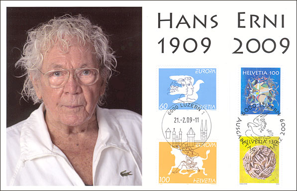
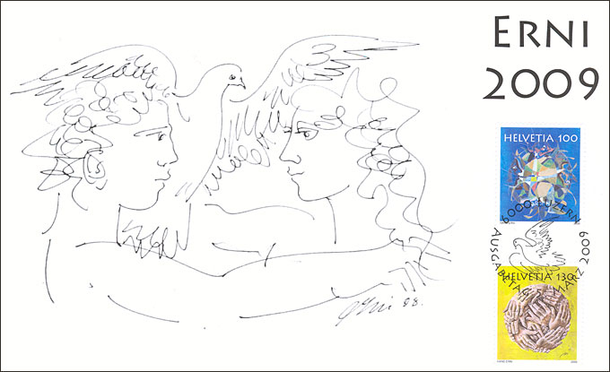
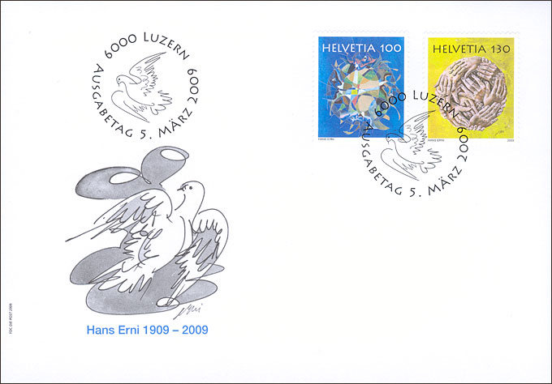

|
 |
HANS ERNI - 100 FROM THE STATE ARTIST TO THE STATE ENEMY AND BACK |
 |
On 21st February 2009 Hans Erni - who still paints every day - celebrated his 100th birthday. This is an excellent occasion to look back at the development of his art and of how it was perceived during such a long activity. The case Erni is an example of how a talented artist, who was considered by the art critics and the politics as belonging as well to the avant-garde, as to the future of the Swiss art, (was) moved later away from both of them.
Hans Erni was born in the year 1909 in Lucerne, Switzerland as the third child of a family with eight children. After school and a study as a measurement technician, he studied at the Académie Julian in Paris (where he won an award) and at the Art School in Berlin. In Paris, which he visited many times, he had contacts with different artists, like Arp, Brancusi, Calder, Kandinsky, Mondrian and Moore, who influenced his paintings.

In 1931 Hans Erni co-founded in Paris the group "Abstraction-Création", with members like Kandinsky, Arp, Mondrian and Le Corbusier. The goal of this group was to promote the abstract art. But all will change for him after he will receive an official commission for a 100 meters long fresco (an excerpt is shown above) under the title "Switzerland, the Holiday Country of People". Erni will say later: "When I saw the Switzerland in 1937 in such a dangerous situation, I cared less about what did the Abstracts. For me it was an inside necessity to present figuratively the importance of Switzerland." Obviously, this work was not what the avant-garde expected from him...
|
 |
 |
After the WW2 Erni engaged himself in the peace movement (that was initiated, controlled and partly financed by the USSR) and had contacts with the communist intelligentsia in Zürich and Paris. His political orientation disliked to his earlier commissioners and he became thus, from an earlier state artist, a state foe. He will receive during 20 years much less public commissions, and he will be rarely exhibited in Swiss museums.
After 1956, when the Soviet troops drowned in blood the Hungarian revolution, Erni distanced himself from the communism and adhered, like many left sympathizers, to ecological ideas, that became in time more and more fashionable. Erni will be very active as a stamp designer, as well for the Swiss as for many other postal administrations. We show above the 1986 Europe stamp CEPT - Nature and Environmental Protection. It won the "Grand Prix de l'art philatélique européen 1986" and in 1987, in Asiago/Italy, "The International Award for the Art on Stamps". On the right we display Erni's shocking poster "Protect the Forest", one that followed another fashion of the 70th - 80th, when quite everybody has been induced to believe that the acid rains were destroying the European forests.

For his 100th birth anniversary Hans Erni designed two new stamps, that were issued on 5th March 2009. As usually, they combine real and abstract elements. The stamp above is labeled "The Human Mind", something that is not obvious to represent. Please notice the four human faces, placed in different positions.

The above stamp has a more obvious subject, the "Human Hands", just that some of the hands aren't necessarily human-like, which could point toward some potential excesses of the bio-sciences. It is thanks to his realist art, like for example of the portraits on stamps of prominent figures of culture and science (Le Corbusier, Alberto Giacometti, Albert Einstein, Rainer Maria Rilke, Paul Klee, Thomas Mann and many others), that Hans Erni achieved a deserved international reputation.

The Swiss Post paid tribute to Hans Erni creativity over many years with a limited edition Combi-Folder that contains the two new stamps, cancelled First Day of Issue, and two Europe stamps, designed in 1995 and cancelled with a Luzern 21.2.2009 publicity cancellation.
The inquiring minds will notice that the price for the roughly the same postal service climbed from 0.60 to 1.00 CHF, which means a cost increase of 67 per cent in 13 years, or 5% yearly, which largely exceeds the official yearly inflation figures of 2 - 3%.

Above we show the inner part of the Combi-Folder. Please notice the repeating elements of Erni's drawings, the curled hair, his narcissistic habit to use its own face for the most of his masculine figures, and the dove, the symbol of peace, so dear to and misused by his friend Picasso. In the intimate mood of the above 1998 drawing the dove seems to rather replace Cupid than to fight for eternal peace.

The cachet on the above FDC is quite intriguing. It seems that the unavoidable dove is endangered, but the nature of this threat (represented by a kind of cartoon character) is not obvious. Anyway, all in all an interesting issue of the Swiss post.
Sources:
- Focus on Stamps 1/2009, Centenarian Erni Designs Special Stamps.
- Die Weltwoche, No. 6, 2009, The Last Humanist.Link on this site: Hans Erni, A Swiss Artist
Link to Hans Erni's website (in German)